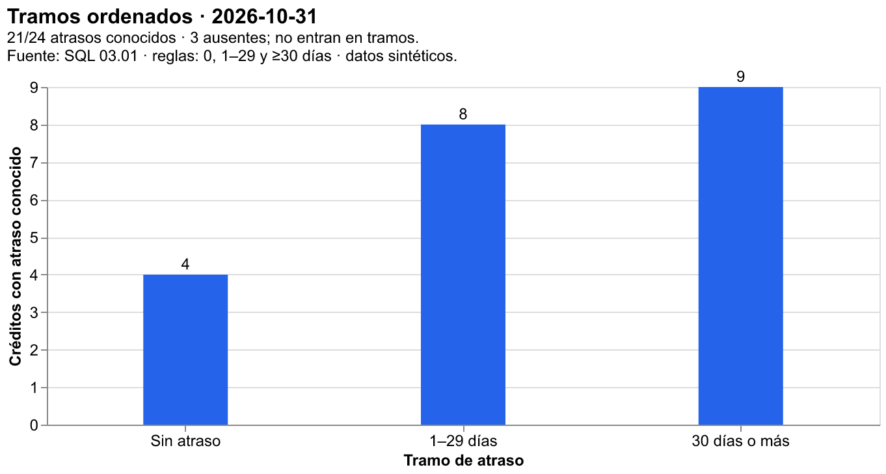
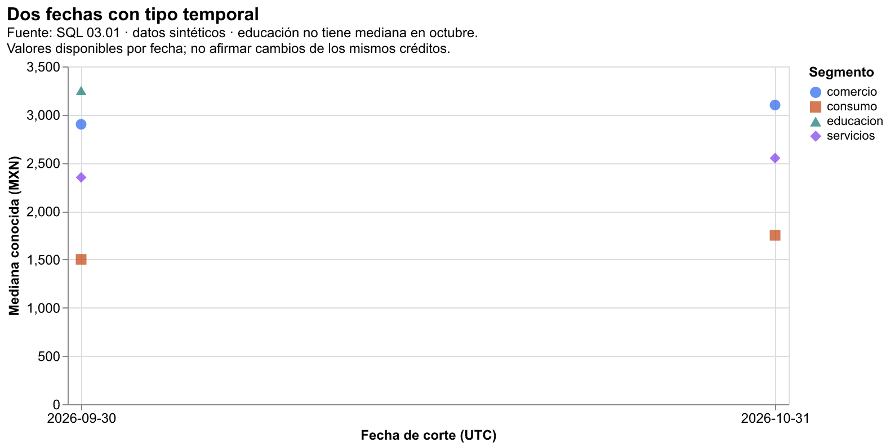
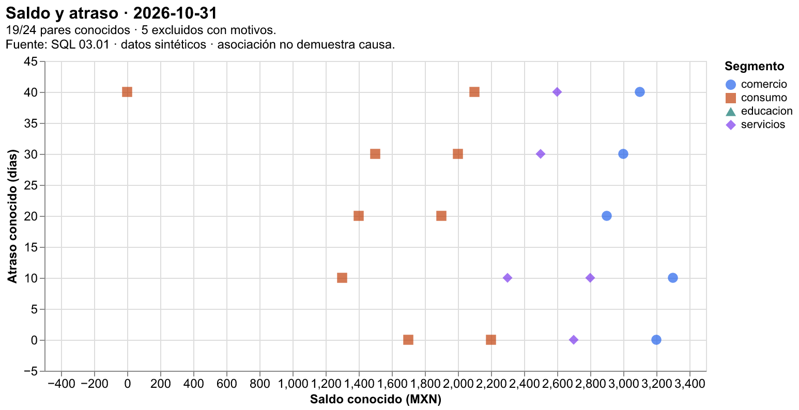

04.07 — Altair: visualización declarativa
MÓDULO 04 / 04.07
Contenido / Visualización en Python
Inicio / Módulo 04 / Lección 04.07
| Tu sesión | Qué prepararás o comprobarás |
|---|---|
| Meta | Expresar una figura con datos, marcas y canales comprobados |
| Necesitas | Pandas y Altair según el recorrido; exportación ampliada opcional |
| Evidencia | Especificación, tablas y HTML con valores contrastados |
Preparación · Material de apoyo · Ir al lab · Comprobar
Propósito
Expresar una figura mediante datos, marcas y codificaciones visuales. Con Altair describes qué columna corresponde a una posición, color o forma; una biblioteca de renderizado interpreta esa descripción y dibuja el resultado. Conservaremos los indicadores ya comprobados en Matplotlib para comparar herramientas sobre la misma pregunta, población y unidad.
Antes de empezar
Completa 04.06 — Composición y exportación y su lab. Reutiliza escalas y accesibilidad de 04.05, pares de 04.04 y bases de comparación de 04.03. Necesitas selección y agrupación en pandas; no necesitas escribir JavaScript.
Práctica principal: Chart, marcas, canales, tipos N/O/Q/T, tablas preparadas, composición y comprobación frente a Matplotlib. Ampliación: agregación dentro del gráfico, exportación sin conexión y PNG/SVG. Parámetros, selección y filtros interactivos se desarrollan en 04.08; no necesitas construirlos aquí.
Qué vas a aprender
- Explicar cómo una tabla, una marca y sus canales forman una especificación.
- Elegir tipo nominal, ordinal, cuantitativo o temporal por su significado.
- Dibujar indicadores preparados sin agregar accidentalmente otra medida.
- Conservar una categoría sin valor y comprobar coordenadas de pares conocidos.
- Distinguir sintaxis válida de resultados analíticos correctos.
- Exportar JSON/HTML y explicar sus requisitos de apertura; PNG/SVG son ampliación.
Material de apoyo
| Recurso | Para qué sirve | Uso |
|---|---|---|
| Script de ejemplo | Construir y comprobar vistas declarativas | Para el recorrido |
| Fuentes de SQL | Consultar observaciones de origen | Entradas compartidas |
| Vista de referencia | Contrastar mediana y cobertura con Matplotlib | Para observar |
Las figuras incluidas sirven para observar y contrastar. Abre el script cuando el recorrido lo indique para regenerar o practicar; conserva las fuentes y las entregas anteriores y utiliza los destinos de práctica indicados.
Contexto y datos del recorrido
El script declarative.py reutiliza lectura y resumen de 04.06 sobre los CSV sintéticos de SQL 03.01. No descarga un dataset de demostración ni cambia las reglas de limpieza. Para octubre de 2026:
| Vista | Unidad y medida | Base comprobada |
|---|---|---|
| Medianas y cobertura | Mediana conocida en MXN y conocidos/registros en % | 24 registros; 21 saldos conocidos |
| Dispersión | Saldo y atraso del mismo crédito/corte | 19 pares; 5 exclusiones |
| Tramos de atraso | Conteo de créditos por categoría ordenada | 21 atrasos conocidos; 3 ausentes |
| Fechas | Mediana por segmento y corte | 8 grupos de dos fechas; 7 medianas conocidas |
Referencias declaradas y comprobadas: Altair 6.3.0, pandas 2.3.3 y Matplotlib 3.10.7. El grupo opcional chart-export fija vl-convert-python 1.9.0.post1. Son versiones del curso, no una promesa de ser siempre las más recientes. La documentación oficial puede mostrar una compilación posterior. Las APIs utilizadas se ejecutaron con estas referencias.
Altair está en pyproject.toml y uv.lock. chart-export añade un convertidor para HTML con bibliotecas incorporadas y archivos estáticos; no requiere instalar Node.js, un controlador de navegador ni altair_saver. Conserva el gestor elegido en 00.05. Los recorridos completos de preparación, comprobación y ejecución están más abajo. No instales en base ni mezcles gestores sobre el mismo entorno.
1. De la tabla a la figura: qué significa «declarativa»
En Matplotlib dibujamos sobre un Axes y controlamos sus elementos. En Altair creamos una descripción: «usa barras; su longitud representa mediana_mxn; su posición vertical representa segmento». Ambos enfoques permiten expresar una misma medida. Cambiar de biblioteca no valida los datos automáticamente.
flowchart LR
A[CSV y contrato] --> B[Tabla comprobada en pandas]
B --> C[Chart: datos]
C --> D[Marca y canales con tipos]
D --> E[Especificación Vega-Lite]
E --> F[Visor: figura]Sin renderizador: prepara y comprueba la tabla, declara cómo se representa cada campo, genera una especificación y ábrela con un visor que pueda dibujarla. La comprobación debe acompañar todo el flujo, no terminar al crear Chart.
Vega-Lite es la gramática que describe el gráfico. Altair ofrece su interfaz en Python. Vega y el visor llevan esa especificación a una imagen en el navegador; vl-convert permite convertirla también desde Python. JSON guarda datos estructurados como claves, listas y valores: aquí conserva la descripción del gráfico y sus datos incorporados. No es una captura de pantalla.
Crear alt.Chart(tabla) no muestra por sí solo una ventana en una terminal. En un notebook compatible, una última expresión con el Chart puede mostrarse; asignarlo a una variable no obliga a dibujarlo. El ejemplo usa archivos HTML para que la práctica no dependa de un notebook ni de un estado oculto.
2. Chart, marca y codificación, paso a paso
Primero crea la tabla comprobada. Este fragmento usa las funciones del script y puede ejecutarse desde la carpeta de la lección con el entorno preparado:
import altair as alt
from declarative import prepare, read_detail
tablas = prepare(read_detail(), "2026-10-31")
resumen = tablas["resumen"]
con_mediana = resumen.loc[resumen["mediana_mxn"].notna()].copy()
base = alt.Chart(con_mediana) # Una fila por segmento conocido.
barras = base.mark_bar() # Elige la marca, no una agregación.
grafico = barras.encode(
x=alt.X("mediana_mxn:Q", title="Mediana conocida (MXN)"),
y=alt.Y("segmento:N", title="Segmento",
sort=["comercio", "consumo", "educacion", "servicios"]),
).properties(width=450, height=240)Una marca es el elemento con el que representas una observación o resumen: barra, punto, línea o texto. Una codificación vincula un campo de la tabla con una propiedad visual. Un canal es esa propiedad: x, y, color, shape o tooltip, entre otros. Aquí x recibe la mediana y y recibe el segmento.
alt.X y alt.Y crean configuraciones de canal; no debes diseñar una clase de Python para usarlas. "mediana_mxn:Q" combina nombre y tipo; no renombra la columna. properties ajusta tamaño o título. Encadenar métodos dentro de paréntesis permite continuar la expresión en varias líneas.
Puedes escribir los pasos juntos como alt.Chart(...).mark_bar().encode(...). La tabla permanece igual: construir una especificación no cambia sus valores. No supongas que cambiar de marca responde la misma pregunta. Una dispersión representa pares; una línea sugiere un recorrido y necesita orden con significado. No unir segmentos nominales para crear una tendencia artificial.
Este fragmento introductorio muestra solo grupos con mediana. La entrega completa añade mensajes para los grupos sin valor y un panel de cobertura; no borrar educación del relato porque no puede tener barra.
3. Tipos visuales: el significado importa más que dtype
| Tipo | Código | Significado | Campo de esta práctica |
|---|---|---|---|
| Nominal | N | Categorías distintas sin orden inherente | segmento, id_credito |
| Ordinal | O | Categorías con un orden definido | tramo_atraso |
| Cuantitativo | Q | Magnitud numérica con diferencias medibles | saldo_mxn, dias_atraso, creditos |
| Temporal | T | Fechas o instantes representados en el tiempo | fecha_corte |
Los identificadores 001 y 004 distinguen créditos: restarlos no produce una medida útil, aunque parezcan números. Por eso id_credito usa N. El atraso original en días es Q; al agruparlo en tramos obtenemos una categoría O. Una columna de texto con fechas puede representarse como T, pero la conversión y validación previas siguen siendo necesarias. Los cuatro códigos no sustituyen los tipos y reglas de pandas enseñados en 02.04.
Altair puede inferir tipos desde un DataFrame; esa inferencia no conoce el significado de un ID ni tu regla de orden. Aquí los declaramos explícitamente. alt.X("saldo_mxn:Q") equivale a alt.X("saldo_mxn", type="quantitative"). Usa una forma coherente al estudiar.
Nominal no significa «imposible de ordenar»
Puedes ordenar segmentos para facilitar lectura, conservando su tipo N. El orden comercio → consumo → educación → servicios organiza la presentación; no afirma una jerarquía. Si cambias a O sin justificación, puedes sugerir una progresión que los datos no definen. sort explicita el orden común de las vistas.
Ordinal: categorías ordenadas, no distancias iguales

Los tramos siguen reglas: 0; 1–29; 30 días o más. Sus conteos son 4, 8 y 9: suman los 21 atrasos conocidos. Los tres ausentes quedan en excluidos_atraso.csv; no se clasifican como «Sin atraso». Un tramo vacío tendría conteo cero, que tampoco significa atraso desconocido.
alt.Chart(tablas["tramos"]).mark_bar().encode(
x=alt.X("tramo_atraso:O",
sort=["Sin atraso", "1–29 días", "30 días o más"]),
y=alt.Y("creditos:Q", title="Créditos con atraso conocido"),
)El eje ordinal sitúa categorías separadas; la distancia gráfica entre ellas no mide igual cantidad de días y la última no tiene límite superior. No es un histograma de intervalos de igual anchura. Cambiar O a Q no convierte sus nombres en números ni permite obtener un promedio válido de códigos de tramo.
Temporal: mostrar fechas con su calendario

La vista temporal coloca las dos fechas en un eje T. Su tabla tiene ocho grupos: en septiembre las medianas son 2900, 1500, 3250 y 2350; en octubre, 3100, 1750, ausente y 2550, en el orden común de segmentos. Se dibujan siete puntos, no una mediana cero para educación. Son las mismas cifras de 04.06.
El script convierte fecha_corte con formato explícito y usa escala UTC para conservar los cortes al mostrar estas fechas sin hora. No significa que los datos describan eventos horarios. En datos con horas, zona de origen y conversión requerirían un contrato propio; T no lo resuelve automáticamente.
# comparacion ya contiene fecha_corte como datetime validado.
alt.Chart(tablas["comparacion"]).mark_point().encode(
x=alt.X("fecha_corte:T", scale=alt.Scale(type="utc")),
y="mediana_mxn:Q",
color="segmento:N",
shape="segmento:N",
)En el script completo seleccionamos medianas conocidas y explicamos la ausencia. Usar N para las fechas las convertiría en categorías separadas con separación categórica; no comunicaría distancias de calendario en una serie irregular. No dibujamos líneas aquí: dos cortes y bases cambiantes no acreditan una tendencia individual. Una agregación temporal como «mes» también cambiaría la agrupación y exige una decisión explícita.
4. Misma tabla y medida que Matplotlib

La composición reproduce la tabla de 04.06: comercio 3100 MXN (5/5), consumo 1750 (10/10), educación sin mediana (0/3) y servicios 2550 (6/6). El panel de cobertura muestra 100, 100, 0 y 100 %. La forma o el aspecto de las letras puede cambiar entre motores; esos cambios no autorizan otra población, denominador o medida.
El script declara barras para medianas válidas, texto en otra capa para valores y mensajes, y cuadrados para cobertura. Una capa superpone marcas sobre la misma vista: alt.layer(barras, textos, mensajes). El operador + también puede expresar esa relación. No suma las medianas: compone sus representaciones.
Una concatenación coloca vistas lado a lado: alt.hconcat(medianas, cobertura). Después se declaran escalas horizontales independientes y categorías verticales compartidas con resolve_scale(x="independent", y="shared"). Es la misma decisión conceptual de 04.06: MXN y porcentaje requieren unidades separadas.
En medians_chart, alt.Scale(domain=[0, right], ...) define el rango; right es al menos 5000 y vale 5000 con estos datos. Si crece la mediana, el script amplía ese límite para dejar espacio a las etiquetas. El dominio son valores de datos, no tamaño en píxeles. En cambio, width=450 y height=240 definen el área de dibujo, a la que se añaden títulos, ejes y leyendas. El PNG completo no tiene por qué medir 450 × 240 píxeles.
La marca color="#2563eb" establece un color constante. color="segmento:N" en encode vincula una columna a colores y normalmente produce una leyenda. Confundir ambas formas puede llevar a buscar una columna cuyo nombre sea un color. El script usa color y forma conjuntamente en dispersión y fechas; texto y categorías escritas permiten leer la composición sin depender solo del color.
5. Pares conocidos, forma y tooltip

Cada punto representa un crédito de octubre con saldo y atraso conocidos en la misma fila. Por ejemplo, el crédito 004 se ubica en (0 MXN, 40 días). Hay 19 puntos entre 24 registros; cinco exclusiones se conservan con los indicadores saldo_ausente y atraso_ausente. No eliminar nulos por separado para luego emparejar dos listas con posiciones diferentes.
alt.Chart(tablas["pares"]).mark_point(filled=True).encode(
x=alt.X("saldo_mxn:Q", title="Saldo conocido (MXN)"),
y=alt.Y("dias_atraso:Q", title="Atraso conocido (días)"),
color="segmento:N",
shape="segmento:N",
tooltip=["id_credito:N", "saldo_mxn:Q", "dias_atraso:Q"],
)shape añade una señal distinta del color. tooltip declara la información que puede aparecer al pasar el cursor sobre una marca en un visor compatible; no filtra ni selecciona créditos. Un PNG no ofrece ese comportamiento. Las etiquetas y la tabla deben permitir la lectura básica sin depender del cursor. La leyenda conserva los cuatro segmentos, pero educación no tiene pares en octubre: aparecer en la leyenda no demuestra observaciones dibujadas.
Una especificación válida puede omitir marcas cuyos campos sean inválidos; no confiar en esa omisión como política de calidad. Aquí seleccionamos y conciliamos pares antes del gráfico. No reemplazamos ausencias por cero y no afirmamos causalidad. Las líneas, regresión o suavizado requerirían otra pregunta y supuestos; no se añaden para decorar la nube.
6. Preparar un resumen no es agregar dentro del gráfico
En la práctica principal, pandas prepara una fila por segmento y corte. Altair recibe mediana_mxn, registros y conocidos y los representa. La codificación x="mediana_mxn:Q" no solicita otra agregación.
Como ampliación, Vega-Lite también puede calcular un resumen desde el detalle:
desde_detalle = alt.Chart(tablas["corte"]).mark_bar().encode(
x=alt.X("median(saldo_mxn):Q", title="Mediana conocida (MXN)"),
y=alt.Y("segmento:N", sort=["comercio", "consumo", "educacion", "servicios"]),
)median(...) en la codificación pide una agregación, agrupada aquí por segmento. Su resultado se calcula al interpretar la especificación: no aparece automáticamente como una nueva columna en tu DataFrame de Python. Para esta base debe coincidir con las tres medianas conocidas; la comprobación de la sección contrasta también ese resultado renderizado.
Ese fragmento no reemplaza la entrega completa: necesita fuente, cobertura y mensaje de educación. Añadir canales de categoría puede cambiar las claves de agrupación. Combinar fechas o pasar un resumen diferente también puede cambiar qué filas se agregan. Pregunta siempre «¿qué representa una fila de entrada y qué representa una marca de salida?».
No sumar medianas de varios grupos para obtener la mediana total ni calcular una mediana de medianas para reconstruir el indicador del detalle. Tampoco mezclar count() de filas con conteo de valores conocidos sin revisar ausencias. Para aprender esta herramienta elegimos tablas explícitas y verificables; las transformaciones visuales se incorporan cuando se pueda justificar su base.
7. Especificación, visor y exportación
grafico.to_dict(validate=True) comprueba si la descripción cumple el esquema de Vega-Lite. grafico.to_json() o guardar .json produce JSON. La validación detecta opciones o tipos de configuración incompatibles; no sabe si confundiste saldo total con mediana, si usaste un denominador incorrecto o si el ID es Q.
grafico.save("grafico.json")
grafico.save("grafico.html")En el recorrido básico el HTML contiene los datos de la figura, pero carga las bibliotecas JavaScript desde una CDN, un servicio que distribuye archivos en la web. Necesita conexión y un visor que permita ejecutar esas bibliotecas. Una terminal de texto no renderiza JSON; una previsualización de Markdown puede bloquear JavaScript aunque un navegador sí lo ejecute. Una vista vacía exige revisar el archivo y el visor, además de los datos.
Con el grupo opcional chart-export puedes usar grafico.save(..., inline=True) para incorporar las bibliotecas al HTML. En este ejemplo los datos también están incorporados: la combinación permite abrirlo sin red. Si otra figura apuntara a datos por URL, incorporar bibliotecas no descargaría ni incorporaría automáticamente esos datos. El HTML suele pesar más que la especificación JSON.
--bundle guarda HTML sin CDN y añade PNG/SVG con vl-convert. El PNG usa scale_factor=2, que escala el renderizado; no es el mismo parámetro dpi de Matplotlib. SVG conserva elementos vectoriales de estas figuras. Los archivos estáticos no tienen tooltip. No hacen falta navegador automatizado, Node.js ni altair_saver para esas conversiones.
Los datos incorporados se pueden inspeccionar en JSON o HTML: ocultar un campo del tooltip no lo vuelve privado. Las figuras de este curso usan únicamente datos sintéticos. Un cambio de renderer tampoco certifica accesibilidad; acompaña la entrega con tabla y texto como se practicó en 04.05.
El transformador habitual de Altair limita por defecto tablas grandes incorporadas (5000 filas). Esta muestra es pequeña. Desactivar el límite no garantiza rendimiento ni memoria acotada: primero define el resumen que responde tu pregunta. Procesar datasets mayores pertenece a otros módulos.
8. Preparar, comprobar y ejecutar con el gestor elegido
Usa solo uno de los gestores. Si tus paquetes ya son adecuados, empieza por comprobarlos y evita reinstalar. Conda y venv deben estar activados en el entorno de aprendizaje de 00.05. Para uv, la raíz ya contiene los requisitos; sync --locked aplica el lockfile y run --locked lo conserva al ejecutar. No uses uv add para repetir requisitos que ya se declararon.
PowerShell
Desde la raíz y con tu entorno de aprendizaje elegido:
# Opción Conda: solo si faltan los paquetes, dentro del entorno activado.
conda install -c conda-forge altair=6.3.0
# Ampliación de exportación, si la quieres:
conda install -c conda-forge vl-convert-python=1.9.0.post1
# Opción venv/pip: usar en lugar de Conda, con el venv activado.
python -m pip install "altair==6.3.0"
# Ampliación de exportación, si la quieres:
python -m pip install "vl-convert-python==1.9.0.post1"
# Comprobar y ejecutar con Conda O venv/pip, después de elegir solo uno:
python -c "import altair, pandas; print(altair.__version__, pandas.__version__)"
python curriculum/04_visualization_python/07_altair_declarative/declarative.py --output curriculum/04_visualization_python/07_altair_declarative/output/octubre
# Ampliación, con el convertidor preparado y otra carpeta nueva:
python curriculum/04_visualization_python/07_altair_declarative/declarative.py --bundle --output curriculum/04_visualization_python/07_altair_declarative/output/octubre_bundle
# Opción uv: recorrido alternativo completo, sin los gestores anteriores.
uv sync --locked
uv run --locked python -c "import altair, pandas; print(altair.__version__, pandas.__version__)"
uv run --locked python curriculum/04_visualization_python/07_altair_declarative/declarative.py --output curriculum/04_visualization_python/07_altair_declarative/output/octubre
# Ampliación opcional:
uv sync --locked --group chart-export
uv run --locked --group chart-export python curriculum/04_visualization_python/07_altair_declarative/declarative.py --bundle --output curriculum/04_visualization_python/07_altair_declarative/output/octubre_bundleBash/Zsh
Desde la raíz y con tu entorno de aprendizaje elegido:
# Opción Conda: solo si faltan paquetes, dentro del entorno activado.
conda install -c conda-forge altair=6.3.0
# Ampliación opcional:
conda install -c conda-forge vl-convert-python=1.9.0.post1
# Opción venv/pip: usar en lugar de Conda, con el venv activado.
python -m pip install "altair==6.3.0"
# Ampliación opcional:
python -m pip install "vl-convert-python==1.9.0.post1"
# Comprobar y ejecutar con Conda O venv/pip, después de elegir solo uno:
python -c "import altair, pandas; print(altair.__version__, pandas.__version__)"
python curriculum/04_visualization_python/07_altair_declarative/declarative.py --output curriculum/04_visualization_python/07_altair_declarative/output/octubre
python curriculum/04_visualization_python/07_altair_declarative/declarative.py --bundle --output curriculum/04_visualization_python/07_altair_declarative/output/octubre_bundle
# Opción uv: recorrido alternativo completo.
uv sync --locked
uv run --locked python -c "import altair, pandas; print(altair.__version__, pandas.__version__)"
uv run --locked python curriculum/04_visualization_python/07_altair_declarative/declarative.py --output curriculum/04_visualization_python/07_altair_declarative/output/octubre
# Ampliación opcional:
uv sync --locked --group chart-export
uv run --locked --group chart-export python curriculum/04_visualization_python/07_altair_declarative/declarative.py --bundle --output curriculum/04_visualization_python/07_altair_declarative/output/octubre_bundleCMD / Anaconda Prompt, recorrido Conda
Con el entorno de aprendizaje activado, desde la raíz:
REM Instalar solo si falta Altair en el entorno elegido; nunca en base.
conda install -c conda-forge altair=6.3.0
python -c "import altair, pandas; print(altair.__version__, pandas.__version__)"
python curriculum/04_visualization_python/07_altair_declarative/declarative.py --output curriculum/04_visualization_python/07_altair_declarative/output/octubre
REM Ampliacion opcional: preparar convertidor y usar otra carpeta.
conda install -c conda-forge vl-convert-python=1.9.0.post1
python curriculum/04_visualization_python/07_altair_declarative/declarative.py --bundle --output curriculum/04_visualization_python/07_altair_declarative/output/octubre_bundleConda resuelve sus paquetes según plataforma y canales; si no ofrece una versión exacta, consulta y registra una alternativa compatible, sin cambiar a pip en el mismo entorno por ensayo. La verificación de esta sección utilizó uv y un entorno local separado para respetar el entorno existente. No se modificó base.
9. Archivos y comprobación de la entrega
El recorrido básico genera cuatro HTML, cuatro especificaciones JSON, siete CSV (corte, resumen, pares, excluidos_pares, tramos, excluidos_atraso y comparacion), lectura.md y versiones.json. --bundle añade cuatro PNG y cuatro SVG, y el HTML lleva bibliotecas incorporadas. Las imágenes curadas de esta lección usan esa ampliación; basta reconstruir HTML para completar la práctica principal.
--cut elige el corte para medianas, pares y tramos. fechas sigue mostrando septiembre/octubre de las fuentes. Cada ejecución exige carpeta nueva y conserva las entregas previas. No escribe ni reinicia SQLite. Abre un HTML con un navegador compatible; un navegador no necesita instalar Altair para leer un archivo ya generado.
Comprueba en este orden:
- Concilia 24 registros, 21 saldos conocidos, 21 atrasos conocidos y 19 pares.
- Comprueba medianas y cobertura contra 04.06, y los 19 pares contra 04.04.
- Suma tramos: 4 + 8 + 9 = 21; los tres atrasos ausentes permanecen separados.
- Revisa campos, tipos, marcas y escalas de las especificaciones JSON. Verifica que no haya una agregación inesperada ni referencias a otros datasets.
- Abre las figuras y coteja posiciones, fechas, leyendas y mensajes con CSV. Para –bundle, prueba el HTML sin conexión y las versiones estáticas.
- Conserva lectura.md y añade una descripción para tramos, pares y fechas: la nota generada describe principalmente medianas y cobertura.
Errores habituales: campo mal escrito; ID tratado como magnitud; tipo ordinal sin orden; cadena de fechas sin validar; agregar una tabla ya resumida sin revisar unidad; asumir que JSON validado significa análisis correcto; culpar a los datos cuando el visor bloquea JavaScript. Localiza qué etapa falló y conserva la tabla original al corregir.
Práctica
Realiza el lab 04.07 para construir y leer una figura declarativa desde indicadores preparados.
Evidencia y criterio de salida
| Conserva | Comprueba | Explica |
|---|---|---|
| Código, especificación y tablas | Valores, tipos visuales y agregación explícita | Qué hacen datos, marca y canales en la figura |
| HTML y nota de contraste | Misma población y medida que la referencia; requisitos de apertura | Cómo se representan ausencias y por qué una especificación válida no valida el análisis |
Puedes avanzar cuando expliques datos, marca, canal y tipo de una figura; compruebes sus valores frente al análisis anterior y reconstruyas una entrega que otra persona pueda abrir y leer. Justifica ausencias y agregación, no solo que aparezcan barras.
Quien aprende realiza y explica la práctica; su compañero revisa. Tu compañero señala un canal y pide rastrear su campo, tipo visual y valor de origen. Guarda evidencia, ayudas y dudas en una nota personal junto a tu práctica. PROGRESS.md conserva el desarrollo editorial; disponer del material no acredita por sí solo aprendizaje completado.
No hay proyecto ni checkpoint implementado asociado a esta lección.
Referencias
Ejemplos, datos de práctica, código y figuras propios de DS Track. La investigación se apoyó en fuentes primarias de Vega-Altair y Vega-Lite, cuyos equipos desarrollan las herramientas; no se copiaron ejemplos de sus datasets ni imágenes de la galería.
Siguiente paso
Después de la práctica y su comprobación, continúa con 04.08 — Interacción con Altair.
04.08 es opcional: puedes ir directamente a 04.09 — Cierre visual del análisis.